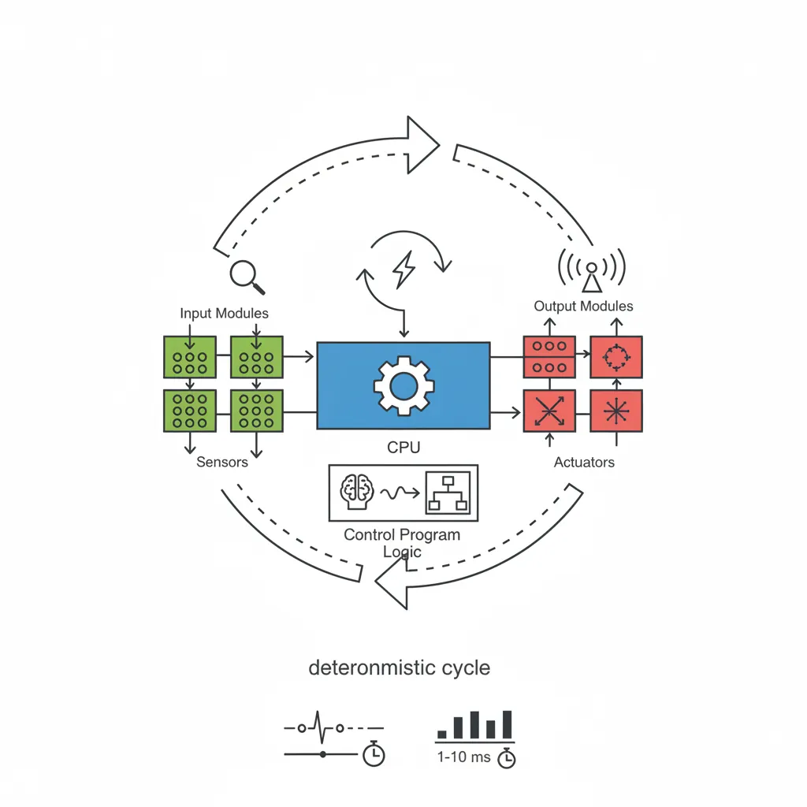
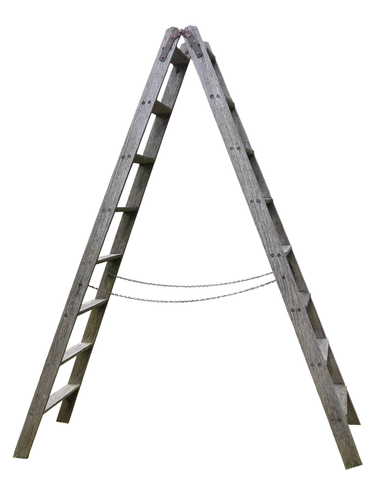
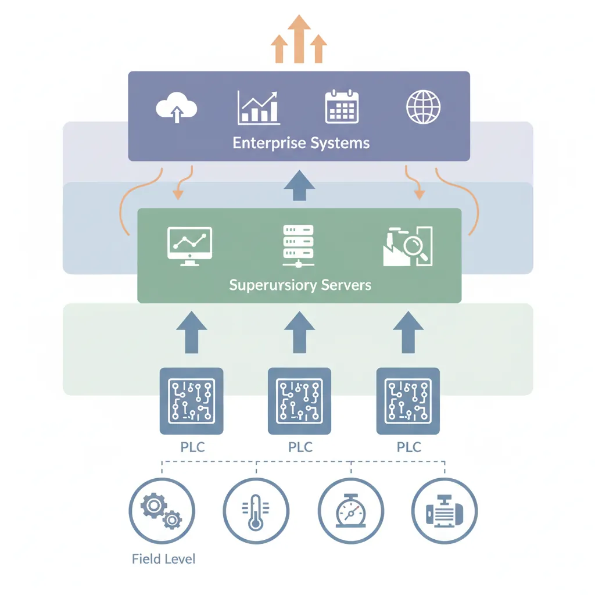
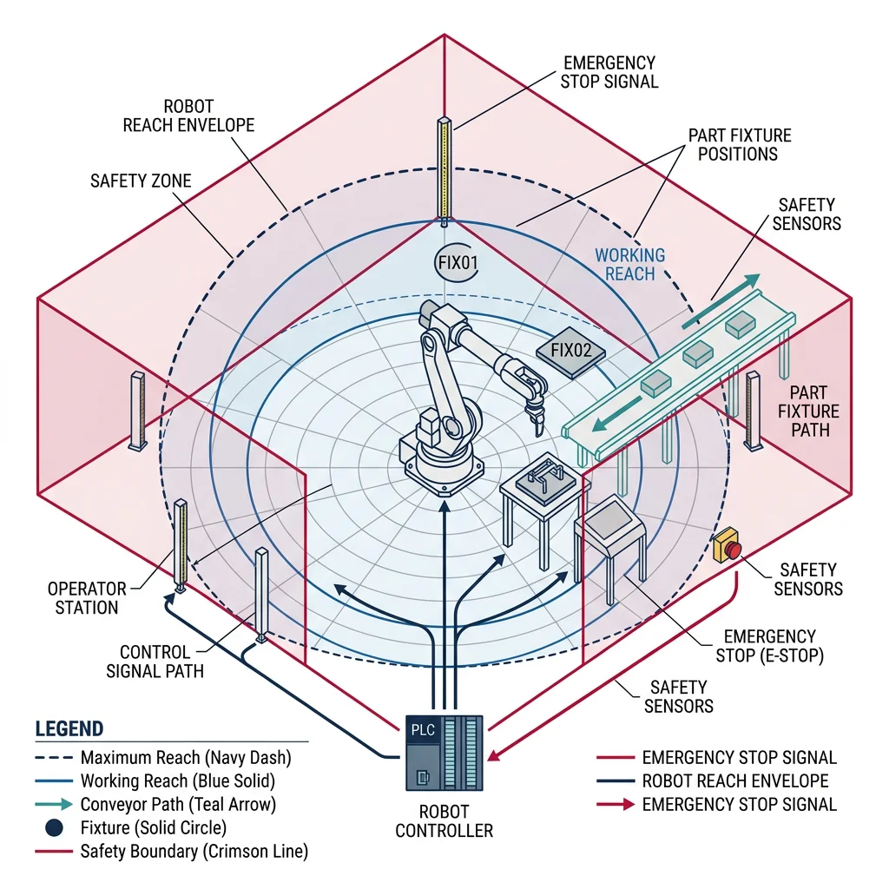

PLC Programming
Robotics & Automation Mastery
Introduction to Robotics
History, types, DOF, architectures, mechatronics, ethicsSensors & Perception Systems
Encoders, IMUs, LiDAR, cameras, sensor fusion, Kalman filters, SLAMActuators & Motion Control
DC/servo/stepper motors, hydraulics, drivers, gear systemsKinematics (Forward & Inverse)
DH parameters, transformations, Jacobians, workspace analysisDynamics & Robot Modeling
Newton-Euler, Lagrangian, inertia, friction, contact modelingControl Systems & PID
PID tuning, state-space, LQR, MPC, adaptive & robust controlEmbedded Systems & Microcontrollers
Arduino, STM32, RTOS, PWM, serial protocols, FPGARobot Operating Systems (ROS)
ROS2, nodes, topics, Gazebo, URDF, navigation stacksComputer Vision for Robotics
Calibration, stereo vision, object recognition, visual SLAMAI Integration & Autonomous Systems
ML, reinforcement learning, path planning, swarm roboticsHuman-Robot Interaction (HRI)
Cobots, gesture/voice control, safety standards, social roboticsIndustrial Robotics & Automation
PLC, SCADA, Industry 4.0, smart factories, digital twinsMobile Robotics
Wheeled/legged robots, autonomous vehicles, drones, marine roboticsSafety, Reliability & Compliance
Functional safety, redundancy, ISO standards, cybersecurityAdvanced & Emerging Robotics
Soft robotics, bio-inspired, surgical, space, nano-roboticsSystems Integration & Deployment
HW/SW co-design, testing, field deployment, lifecycleRobotics Business & Strategy
Startups, product-market fit, manufacturing, go-to-marketComplete Robotics System Project
Autonomous rover, pick-and-place arm, delivery robot, swarm simA Programmable Logic Controller (PLC) is the backbone of industrial automation. Think of it as a ruggedized, real-time computer designed to survive the factory floor — dust, vibration, temperature extremes, and electromagnetic interference — while controlling machines with cycle times measured in milliseconds.

PLCs follow a simple but powerful scan cycle: (1) read all inputs, (2) execute the program logic, (3) update all outputs, (4) repeat. This deterministic cycle ensures predictable, real-time control.
PLC Architecture Components
| Component | Function | Example |
|---|---|---|
| CPU Module | Executes control program, manages scan cycle | Siemens S7-1500, Allen-Bradley ControlLogix |
| Digital I/O | Binary signals — switches, relays, solenoids | 24V DC input/output cards |
| Analog I/O | Continuous signals — temperature, pressure, flow | 4-20 mA, 0-10V modules |
| Communication | Network connectivity to SCADA, HMI, other PLCs | PROFINET, EtherNet/IP, Modbus TCP |
| Power Supply | Converts AC to DC for PLC modules | 24V DC, 5A regulated supply |
| Backplane | High-speed bus connecting all modules | Chassis-based rack system |
The IEC 61131-3 standard defines five programming languages for PLCs. The two most common are Ladder Diagram (LD) for electricians transitioning from relay logic, and Structured Text (ST) for software engineers who prefer textual programming.

Ladder Logic
Ladder logic was invented to make PLCs accessible to electricians who already understood relay wiring diagrams. Each "rung" of the ladder represents a circuit path from the left power rail to the right power rail, with contacts (inputs) and coils (outputs).
Here's a Python simulation of a ladder logic engine that evaluates rungs with AND/OR logic:
class LadderLogicSimulator:
"""Simulates PLC ladder logic execution"""
def __init__(self):
self.inputs = {} # Digital inputs: 'I0.0' -> True/False
self.outputs = {} # Digital outputs: 'Q0.0' -> True/False
self.memory = {} # Internal memory bits: 'M0.0' -> True/False
self.timers = {} # Timer values
self.counters = {} # Counter values
def set_input(self, address, value):
self.inputs[address] = bool(value)
def get_bit(self, address):
"""Resolve any address (input, output, or memory)"""
if address.startswith('I'):
return self.inputs.get(address, False)
elif address.startswith('Q'):
return self.outputs.get(address, False)
elif address.startswith('M'):
return self.memory.get(address, False)
return False
def evaluate_rung(self, rung):
"""
Evaluate a ladder rung.
rung format: {'contacts': [...], 'coil': 'Q0.0', 'logic': 'AND'/'OR'}
Each contact: {'address': 'I0.0', 'type': 'NO'/'NC'}
"""
results = []
for contact in rung['contacts']:
value = self.get_bit(contact['address'])
if contact['type'] == 'NC':
value = not value # Normally Closed inverts
results.append(value)
if rung.get('logic', 'AND') == 'AND':
coil_state = all(results) if results else False
else: # OR logic (parallel contacts)
coil_state = any(results) if results else False
# Energize the coil
coil = rung['coil']
if coil.startswith('Q'):
self.outputs[coil] = coil_state
elif coil.startswith('M'):
self.memory[coil] = coil_state
return coil_state
# Example: Motor start/stop circuit with safety interlock
plc = LadderLogicSimulator()
# Rung 1: Start button (I0.0) AND safety guard (I0.2) -> Motor run (Q0.0)
# OR Motor run latch (Q0.0) — self-holding circuit
# AND NOT Stop button (I0.1) — NC contact breaks the seal
rung1_start = {
'contacts': [
{'address': 'I0.0', 'type': 'NO'}, # Start pushbutton
{'address': 'I0.2', 'type': 'NO'} # Safety guard closed
],
'coil': 'M0.0',
'logic': 'AND'
}
rung1_latch = {
'contacts': [
{'address': 'Q0.0', 'type': 'NO'} # Self-holding contact
],
'coil': 'M0.1',
'logic': 'AND'
}
rung1_output = {
'contacts': [
{'address': 'M0.0', 'type': 'NO'}, # Start condition
{'address': 'I0.1', 'type': 'NC'} # Stop button (NC = breaks when pressed)
],
'coil': 'Q0.0',
'logic': 'AND'
}
# Simulate: Press start with guard closed
plc.set_input('I0.0', True) # Start pressed
plc.set_input('I0.1', False) # Stop not pressed
plc.set_input('I0.2', True) # Guard closed
plc.evaluate_rung(rung1_start)
plc.evaluate_rung(rung1_output)
print(f"Motor Q0.0: {'ON' if plc.outputs.get('Q0.0') else 'OFF'}")
# Output: Motor Q0.0: ON
# Simulate: Press stop
plc.set_input('I0.1', True) # Stop pressed
plc.evaluate_rung(rung1_start)
plc.evaluate_rung(rung1_output)
print(f"Motor Q0.0: {'ON' if plc.outputs.get('Q0.0') else 'OFF'}")
# Output: Motor Q0.0: OFF
Structured Text
Structured Text (ST) resembles Pascal or Python and is ideal for complex mathematical operations, PID control, and data handling that would be cumbersome in ladder logic.
class StructuredTextPLC:
"""Python equivalent of IEC 61131-3 Structured Text patterns"""
def __init__(self):
self.variables = {}
self.timers = {}
self.scan_count = 0
def conveyor_control_program(self, sensor_data):
"""
Equivalent Structured Text (IEC 61131-3):
PROGRAM ConveyorControl
VAR
bPartDetected : BOOL;
rConveyorSpeed : REAL := 0.5; (* m/s *)
iPartCount : INT := 0;
eState : (IDLE, RUNNING, PAUSED, ERROR);
END_VAR
CASE eState OF
IDLE:
IF bStartCommand THEN
eState := RUNNING;
END_IF;
RUNNING:
IF bPartDetected THEN
iPartCount := iPartCount + 1;
IF iPartCount >= iTargetCount THEN
eState := PAUSED;
END_IF;
END_IF;
IF bEmergencyStop THEN
eState := ERROR;
END_IF;
PAUSED:
rConveyorSpeed := 0.0;
ERROR:
rConveyorSpeed := 0.0;
(* Require manual reset *)
END_CASE;
"""
state = self.variables.get('state', 'IDLE')
part_count = self.variables.get('part_count', 0)
speed = 0.0
if state == 'IDLE':
if sensor_data.get('start_command'):
state = 'RUNNING'
speed = 0.5 # m/s
elif state == 'RUNNING':
speed = 0.5
if sensor_data.get('part_detected'):
part_count += 1
if sensor_data.get('emergency_stop'):
state = 'ERROR'
speed = 0.0
elif part_count >= sensor_data.get('target_count', 100):
state = 'PAUSED'
speed = 0.0
elif state == 'PAUSED':
speed = 0.0
if sensor_data.get('resume_command'):
state = 'RUNNING'
part_count = 0
elif state == 'ERROR':
speed = 0.0
if sensor_data.get('reset_command') and not sensor_data.get('emergency_stop'):
state = 'IDLE'
self.variables['state'] = state
self.variables['part_count'] = part_count
self.scan_count += 1
return {
'state': state,
'speed': speed,
'part_count': part_count,
'scan': self.scan_count
}
# Simulate conveyor operation
plc = StructuredTextPLC()
scenarios = [
{'start_command': True, 'part_detected': False},
{'part_detected': True, 'target_count': 3},
{'part_detected': True, 'target_count': 3},
{'part_detected': True, 'target_count': 3},
{'resume_command': True},
]
for i, sensor_data in enumerate(scenarios):
result = plc.conveyor_control_program(sensor_data)
print(f"Scan {result['scan']}: State={result['state']}, "
f"Speed={result['speed']}m/s, Parts={result['part_count']}")
Case Study: Siemens S7-1500 in Automotive Body Shop
A major German automaker uses Siemens S7-1500 PLCs to coordinate 800+ spot-welding robots in their body-in-white (BIW) production line. Each PLC manages a station of 4-6 robots, synchronizing weld sequences with conveyor movement. The PLCs communicate via PROFINET IRT (Isochronous Real-Time) with cycle times under 250 μs, ensuring robots never collide. The result: 60 vehicles per hour with 99.7% uptime.
Key Lesson: Industrial PLCs aren't just controllers — they're orchestrators. The deterministic scan cycle guarantees that safety interlocks (light curtains, emergency stops) are always checked before any motion command executes.
SCADA & HMI Systems
SCADA (Supervisory Control and Data Acquisition) is the nervous system that connects PLCs, sensors, and actuators across an entire plant into a unified monitoring and control platform. If a PLC is the brain of one machine, SCADA is the central command center overseeing the entire factory.

A typical SCADA architecture has four layers:
SCADA Architecture Layers
| Layer | Components | Protocols | Function |
|---|---|---|---|
| Field Level | Sensors, actuators, drives | 4-20 mA, HART, IO-Link | Physical process interface |
| Control Level | PLCs, RTUs, DCS | PROFINET, EtherNet/IP | Real-time logic execution |
| Supervisory Level | SCADA servers, historians | OPC UA, Modbus TCP | Data aggregation, alarming |
| Enterprise Level | MES, ERP (SAP), BI dashboards | REST API, SQL, MQTT | Business intelligence, planning |
import time
import random
class SCADASystem:
"""Simplified SCADA system simulator"""
def __init__(self, plant_name):
self.plant_name = plant_name
self.rtus = {} # Remote Terminal Units (PLCs)
self.alarms = [] # Active alarms
self.historian = [] # Historical data log
self.tags = {} # SCADA tag database
def register_rtu(self, rtu_id, description, tags):
"""Register a PLC/RTU with its I/O tags"""
self.rtus[rtu_id] = {
'description': description,
'tags': tags,
'status': 'ONLINE',
'last_poll': None
}
for tag in tags:
self.tags[tag['name']] = {
'value': tag.get('default', 0),
'unit': tag.get('unit', ''),
'alarm_hi': tag.get('alarm_hi'),
'alarm_lo': tag.get('alarm_lo'),
'rtu': rtu_id
}
def poll_rtu(self, rtu_id, simulated_values=None):
"""Poll RTU for current values (simulated)"""
if rtu_id not in self.rtus:
return None
rtu = self.rtus[rtu_id]
rtu['last_poll'] = time.time()
for tag in rtu['tags']:
if simulated_values and tag['name'] in simulated_values:
new_value = simulated_values[tag['name']]
else:
current = self.tags[tag['name']]['value']
new_value = current + random.uniform(-1, 1)
self.tags[tag['name']]['value'] = new_value
self._check_alarms(tag['name'], new_value)
self._log_to_historian(tag['name'], new_value)
return {tag['name']: self.tags[tag['name']]['value']
for tag in rtu['tags']}
def _check_alarms(self, tag_name, value):
tag = self.tags[tag_name]
if tag['alarm_hi'] and value > tag['alarm_hi']:
alarm = f"HIGH ALARM: {tag_name} = {value:.1f} > {tag['alarm_hi']}"
self.alarms.append(alarm)
print(f" ⚠ {alarm}")
elif tag['alarm_lo'] and value < tag['alarm_lo']:
alarm = f"LOW ALARM: {tag_name} = {value:.1f} < {tag['alarm_lo']}"
self.alarms.append(alarm)
print(f" ⚠ {alarm}")
def _log_to_historian(self, tag_name, value):
self.historian.append({
'tag': tag_name,
'value': round(value, 2),
'timestamp': time.time()
})
# Create SCADA system for a water treatment plant
scada = SCADASystem("Municipal Water Treatment")
# Register RTUs (PLCs at remote pump stations)
scada.register_rtu('RTU-01', 'Intake Pump Station', [
{'name': 'PS1_FLOW', 'unit': 'm3/h', 'default': 150,
'alarm_hi': 200, 'alarm_lo': 50},
{'name': 'PS1_PRESSURE', 'unit': 'bar', 'default': 4.5,
'alarm_hi': 6.0, 'alarm_lo': 2.0},
])
scada.register_rtu('RTU-02', 'Chemical Dosing', [
{'name': 'CHLORINE_PPM', 'unit': 'ppm', 'default': 1.5,
'alarm_hi': 3.0, 'alarm_lo': 0.5},
{'name': 'PH_VALUE', 'unit': 'pH', 'default': 7.2,
'alarm_hi': 8.5, 'alarm_lo': 6.5},
])
# Simulate polling cycle
print("=== SCADA Polling Cycle ===")
print(f"Plant: {scada.plant_name}\n")
for rtu_id in ['RTU-01', 'RTU-02']:
values = scada.poll_rtu(rtu_id)
print(f"{rtu_id} ({scada.rtus[rtu_id]['description']}):")
for tag_name, value in values.items():
tag = scada.tags[tag_name]
print(f" {tag_name}: {value:.2f} {tag['unit']}")
print()
print(f"Historian records: {len(scada.historian)}")
print(f"Active alarms: {len(scada.alarms)}")
HMI Design
An HMI (Human-Machine Interface) is the touchscreen panel or display that operators use to monitor and control the process. Good HMI design follows the "high-performance HMI" principles — minimal color, gray backgrounds, and information hierarchy that lets operators spot abnormalities instantly.
High-Performance HMI Design Rules
| Principle | Traditional HMI | High-Performance HMI |
|---|---|---|
| Background | Black or colored | Light gray (#D4D4D4) |
| Equipment | 3D, animated, colorful | 2D, simplified, grayscale |
| Color Usage | Decorative — green pipes, blue tanks | Functional — red=alarm, yellow=warning only |
| Text | Small, scattered labels | Large, consistent, hierarchical |
| Navigation | Complex menu trees | 4-level hierarchy: Overview → Area → Unit → Detail |
| Alarms | Pop-ups, sound floods | Embedded indicators, prioritized |
OPC UA Communication
OPC UA (Open Platform Communications Unified Architecture) is the universal translator for industrial automation. It's a platform-independent, secure protocol that enables any device — PLCs, robots, SCADA servers, cloud platforms — to exchange data regardless of manufacturer.
class OPCUANode:
"""Simplified OPC UA information model"""
def __init__(self, node_id, browse_name, node_class='Variable', value=None):
self.node_id = node_id # e.g., 'ns=2;s=Robot1.JointAngle.J1'
self.browse_name = browse_name # Human-readable name
self.node_class = node_class # Object, Variable, Method
self.value = value
self.children = []
self.data_type = type(value).__name__ if value else 'None'
self.access_level = 'ReadWrite'
def add_child(self, child):
self.children.append(child)
return child
class OPCUAServer:
"""Simplified OPC UA server simulator"""
def __init__(self, endpoint):
self.endpoint = endpoint
self.address_space = {}
self.root = OPCUANode('ns=0;i=84', 'Root', 'Object')
def create_robot_model(self, robot_name):
"""Create an OPC UA information model for a robot"""
robot = OPCUANode(f'ns=2;s={robot_name}', robot_name, 'Object')
# Joint angles (Variables)
joints = OPCUANode(f'ns=2;s={robot_name}.Joints', 'Joints', 'Object')
for i in range(1, 7):
joint = OPCUANode(
f'ns=2;s={robot_name}.Joints.J{i}',
f'J{i}_Angle',
'Variable',
0.0
)
joints.add_child(joint)
self.address_space[joint.node_id] = joint
robot.add_child(joints)
# Status (Variable)
status = OPCUANode(f'ns=2;s={robot_name}.Status', 'Status', 'Variable', 'IDLE')
robot.add_child(status)
self.address_space[status.node_id] = status
# Speed override (Variable)
speed = OPCUANode(f'ns=2;s={robot_name}.SpeedOverride', 'SpeedOverride', 'Variable', 100)
robot.add_child(speed)
self.address_space[speed.node_id] = speed
self.root.add_child(robot)
print(f"Created OPC UA model for '{robot_name}' with {len(self.address_space)} nodes")
return robot
def read(self, node_id):
node = self.address_space.get(node_id)
if node:
return {'node_id': node_id, 'value': node.value, 'type': node.data_type}
return None
def write(self, node_id, value):
node = self.address_space.get(node_id)
if node and node.access_level == 'ReadWrite':
node.value = value
return True
return False
def browse(self, start_node=None):
"""Browse the address space from a starting node"""
node = start_node or self.root
result = [{'id': node.node_id, 'name': node.browse_name,
'class': node.node_class}]
for child in node.children:
result.extend(self.browse(child))
return result
# Create OPC UA server and model
server = OPCUAServer('opc.tcp://192.168.1.100:4840')
server.create_robot_model('KUKA_KR210')
# Read joint angle
result = server.read('ns=2;s=KUKA_KR210.Joints.J1')
print(f"Read J1: {result}")
# Write new speed override
server.write('ns=2;s=KUKA_KR210.SpeedOverride', 75)
result = server.read('ns=2;s=KUKA_KR210.SpeedOverride')
print(f"Speed Override: {result['value']}%")
# Browse address space
nodes = server.browse()
print(f"\nAddress Space ({len(nodes)} nodes):")
for n in nodes[:8]:
print(f" [{n['class']}] {n['name']} ({n['id']})")
Industry 4.0 & Smart Factories
Industry 4.0 represents the fourth industrial revolution — the convergence of operational technology (OT) with information technology (IT). While Industry 3.0 introduced PLCs and automation, Industry 4.0 connects those systems to the cloud, AI, and each other via the Industrial Internet of Things (IIoT).
The Four Industrial Revolutions
| Revolution | Era | Key Technology | Impact |
|---|---|---|---|
| Industry 1.0 | 1784 | Steam engine, water power | Mechanization of manual labor |
| Industry 2.0 | 1870 | Electricity, assembly line | Mass production (Ford Model T) |
| Industry 3.0 | 1969 | PLCs, computers, robots | Automation of production |
| Industry 4.0 | 2011 | IoT, AI, cloud, digital twin | Smart, connected, autonomous factories |
Industrial IoT (IIoT)
The Industrial IoT connects machines, sensors, and systems to the internet, enabling real-time monitoring, predictive maintenance, and data-driven optimization. Unlike consumer IoT (smart thermostats), IIoT demands deterministic timing, ruggedized hardware, and industrial-grade security.
import json
import time
import random
class IIoTGateway:
"""Industrial IoT Edge Gateway — bridges OT to IT"""
def __init__(self, gateway_id, location):
self.gateway_id = gateway_id
self.location = location
self.devices = {}
self.message_queue = []
self.edge_rules = [] # Local processing rules
def register_device(self, device_id, device_type, protocol):
self.devices[device_id] = {
'type': device_type,
'protocol': protocol,
'status': 'connected',
'last_data': None
}
def add_edge_rule(self, name, condition_fn, action_fn):
"""Add edge computing rule for local decision-making"""
self.edge_rules.append({
'name': name,
'condition': condition_fn,
'action': action_fn
})
def ingest_data(self, device_id, telemetry):
"""Receive data from field device"""
if device_id not in self.devices:
return
telemetry['device_id'] = device_id
telemetry['gateway_id'] = self.gateway_id
telemetry['timestamp'] = time.time()
telemetry['edge_processed'] = False
# Apply edge rules locally (no cloud round trip)
for rule in self.edge_rules:
if rule['condition'](telemetry):
rule['action'](telemetry)
telemetry['edge_processed'] = True
telemetry['rule_triggered'] = rule['name']
self.devices[device_id]['last_data'] = telemetry
self.message_queue.append(telemetry)
return telemetry
def publish_to_cloud(self):
"""Send queued messages to cloud (MQTT/AMQP)"""
messages = self.message_queue.copy()
self.message_queue.clear()
return messages
def get_mqtt_payload(self, telemetry):
"""Format as MQTT message for cloud IoT hub"""
return json.dumps({
'topic': f'factory/{self.location}/{telemetry["device_id"]}/telemetry',
'payload': telemetry,
'qos': 1,
'retain': False
}, indent=2)
# Create IIoT gateway for a CNC machining cell
gateway = IIoTGateway('GW-CELL-04', 'machining_hall_b')
# Register field devices
gateway.register_device('SPINDLE-01', 'CNC Spindle Motor', 'Modbus TCP')
gateway.register_device('VIBRATION-01', 'Vibration Sensor', 'IO-Link')
gateway.register_device('TEMP-01', 'Thermal Sensor', '4-20mA')
# Edge rule: If vibration exceeds threshold, trigger local alert
def high_vibration(data):
return data.get('vibration_rms', 0) > 5.0 # mm/s
def vibration_alert(data):
print(f" EDGE ALERT: High vibration on {data['device_id']}! "
f"RMS={data['vibration_rms']:.1f} mm/s — reduce feed rate")
gateway.add_edge_rule('high_vibration_alert', high_vibration, vibration_alert)
# Simulate data ingestion
print("=== IIoT Gateway Data Ingestion ===\n")
telemetry_samples = [
('SPINDLE-01', {'rpm': 12000, 'current_a': 15.3, 'power_kw': 7.2}),
('VIBRATION-01', {'vibration_rms': 3.2, 'peak_g': 0.8, 'temperature_c': 45}),
('VIBRATION-01', {'vibration_rms': 7.8, 'peak_g': 2.1, 'temperature_c': 62}),
('TEMP-01', {'bearing_temp_c': 78, 'ambient_temp_c': 25}),
]
for device_id, data in telemetry_samples:
result = gateway.ingest_data(device_id, data)
edge_flag = " [EDGE]" if result.get('edge_processed') else ""
print(f"{device_id}: {data}{edge_flag}")
# Publish to cloud
messages = gateway.publish_to_cloud()
print(f"\nPublished {len(messages)} messages to cloud broker")
print(f"\nSample MQTT payload:")
print(gateway.get_mqtt_payload(messages[0]))
Digital Twin Technology
A digital twin is a virtual replica of a physical asset — a robot, a production line, or an entire factory — that mirrors the real system in real time. It enables "what-if" simulation, predictive maintenance, and virtual commissioning (testing automation code before the physical equipment arrives).
import math
class DigitalTwinRobot:
"""Digital twin of a 6-axis industrial robot"""
def __init__(self, robot_id, model):
self.robot_id = robot_id
self.model = model
# Physical state (mirrored from real robot)
self.joint_positions = [0.0] * 6 # degrees
self.joint_velocities = [0.0] * 6 # deg/s
self.joint_currents = [0.0] * 6 # amps
self.tcp_position = [0, 0, 0] # mm
self.cycle_count = 0
self.runtime_hours = 0
# Predictive maintenance model
self.wear_factors = [1.0] * 6 # 1.0 = new, 0.0 = failed
self.maintenance_log = []
def update_from_physical(self, sensor_data):
"""Sync digital twin with physical robot data"""
self.joint_positions = sensor_data.get('positions', self.joint_positions)
self.joint_currents = sensor_data.get('currents', self.joint_currents)
self.tcp_position = sensor_data.get('tcp', self.tcp_position)
self.cycle_count = sensor_data.get('cycle_count', self.cycle_count)
self.runtime_hours = sensor_data.get('runtime_hours', self.runtime_hours)
# Update wear model
self._update_wear_model()
def _update_wear_model(self):
"""Simple wear prediction based on current draw & cycles"""
for i in range(6):
# Higher current = more stress on gearbox
stress_factor = self.joint_currents[i] / 20.0 # normalized
cycle_factor = self.cycle_count / 500000 # typical lifecycle
self.wear_factors[i] = max(0, 1.0 - (stress_factor * 0.1 + cycle_factor))
def predict_maintenance(self, threshold=0.3):
"""Predict which joints need maintenance"""
predictions = []
for i in range(6):
if self.wear_factors[i] < threshold:
remaining_cycles = int((self.wear_factors[i] / (1.0 - self.wear_factors[i] + 0.001)) * self.cycle_count)
predictions.append({
'joint': f'J{i+1}',
'wear_factor': round(self.wear_factors[i], 3),
'status': 'CRITICAL' if self.wear_factors[i] < 0.15 else 'WARNING',
'estimated_remaining_cycles': remaining_cycles,
'action': 'Schedule gearbox replacement' if self.wear_factors[i] < 0.15
else 'Monitor closely — plan maintenance window'
})
return predictions
def simulate_what_if(self, scenario):
"""Run what-if simulation on the digital twin"""
result = {
'scenario': scenario['name'],
'feasible': True,
'issues': []
}
if scenario.get('speed_increase'):
new_speed = scenario['speed_increase']
for i in range(6):
if self.wear_factors[i] < 0.5:
result['issues'].append(
f"J{i+1} wear at {self.wear_factors[i]:.0%} — "
f"speed increase of {new_speed}% not recommended"
)
result['feasible'] = False
if scenario.get('new_payload_kg'):
payload = scenario['new_payload_kg']
max_payload = {'KR210': 210, 'IRB6700': 235, 'M-2000iA': 2300}
max_kg = max_payload.get(self.model, 100)
if payload > max_kg * 0.8:
result['issues'].append(
f"Payload {payload}kg exceeds 80% of max ({max_kg}kg) "
f"— accelerated wear expected"
)
return result
# Create digital twin of a KUKA KR210
twin = DigitalTwinRobot('KUKA-001', 'KR210')
# Simulate receiving data from physical robot
twin.update_from_physical({
'positions': [45.0, -30.0, 60.0, 0.0, 90.0, -45.0],
'currents': [12.5, 18.2, 8.1, 3.5, 5.0, 2.1],
'tcp': [1200, 500, 800],
'cycle_count': 420000,
'runtime_hours': 18500
})
# Predictive maintenance
print("=== Digital Twin: Predictive Maintenance ===\n")
print(f"Robot: {twin.robot_id} ({twin.model})")
print(f"Cycles: {twin.cycle_count:,} | Runtime: {twin.runtime_hours:,}h\n")
for i in range(6):
bar = '█' * int(twin.wear_factors[i] * 20) + '░' * (20 - int(twin.wear_factors[i] * 20))
status = 'OK' if twin.wear_factors[i] > 0.5 else 'WARN' if twin.wear_factors[i] > 0.3 else 'CRIT'
print(f" J{i+1}: [{bar}] {twin.wear_factors[i]:.1%} [{status}]")
# Maintenance predictions
predictions = twin.predict_maintenance()
if predictions:
print(f"\n⚠ Maintenance Predictions:")
for p in predictions:
print(f" {p['joint']}: {p['status']} — {p['action']}")
# What-if simulation
print("\n=== What-If Simulation ===")
scenario = twin.simulate_what_if({
'name': 'Increase line speed by 20%',
'speed_increase': 20,
'new_payload_kg': 180
})
print(f"Scenario: {scenario['scenario']}")
print(f"Feasible: {scenario['feasible']}")
for issue in scenario['issues']:
print(f" Issue: {issue}")
Case Study: Siemens Amberg Digital Factory
The Siemens Amberg Electronics Plant in Germany is often cited as the world's most advanced smart factory. Producing 17 million SIMATIC products annually with 75% automation:
- Digital Twin: Every product has a digital twin created before physical manufacturing begins — virtual commissioning catches 80% of software bugs
- IIoT: 1,000+ IoT sensors feed 50 million data points daily to a MindSphere cloud platform
- Quality: 99.99885% quality rate (11.5 defects per million) — approaching Six Sigma perfection
- Flexible Production: 1,300 product variants on the same line with lot size 1 capability
Key Lesson: Industry 4.0 isn't just about technology — it's about connecting data from every level (sensor → PLC → MES → ERP → cloud) to create a continuous feedback loop that optimizes itself.
Workcell Design & Manufacturing
A robotic workcell is a self-contained manufacturing unit where one or more robots, fixtures, conveyors, and safety systems work together to perform a specific task — welding, painting, assembly, inspection, or palletizing. Designing a workcell requires balancing cycle time, safety zones, material flow, and robot reach.

import math
class RoboticWorkcell:
"""Design and simulate a robotic workcell"""
def __init__(self, name, length_m, width_m):
self.name = name
self.length = length_m
self.width = width_m
self.robots = []
self.stations = []
self.conveyors = []
self.safety_zones = []
self.cycle_time_target = None # seconds
def add_robot(self, robot_id, x, y, reach_m, payload_kg, cycle_time_s):
self.robots.append({
'id': robot_id, 'x': x, 'y': y,
'reach': reach_m, 'payload': payload_kg,
'cycle_time': cycle_time_s
})
def add_station(self, station_id, x, y, process_type, process_time_s):
self.stations.append({
'id': station_id, 'x': x, 'y': y,
'type': process_type, 'time': process_time_s
})
def add_conveyor(self, conveyor_id, start_xy, end_xy, speed_mpm):
length = math.hypot(end_xy[0] - start_xy[0], end_xy[1] - start_xy[1])
self.conveyors.append({
'id': conveyor_id, 'start': start_xy, 'end': end_xy,
'speed': speed_mpm, 'length': length,
'transfer_time': (length / speed_mpm) * 60 # seconds
})
def calculate_cycle_time(self):
"""Calculate total workcell cycle time (bottleneck analysis)"""
times = {}
for robot in self.robots:
times[robot['id']] = robot['cycle_time']
for station in self.stations:
times[station['id']] = station['time']
for conv in self.conveyors:
times[conv['id']] = conv['transfer_time']
bottleneck = max(times, key=times.get)
cycle_time = times[bottleneck]
return {
'cycle_time_s': round(cycle_time, 1),
'bottleneck': bottleneck,
'parts_per_hour': round(3600 / cycle_time, 1),
'all_times': times,
'utilization': {k: round(v / cycle_time * 100, 1)
for k, v in times.items()}
}
def check_reachability(self):
"""Verify all stations are within robot reach"""
issues = []
for robot in self.robots:
for station in self.stations:
dist = math.hypot(station['x'] - robot['x'],
station['y'] - robot['y'])
if dist > robot['reach']:
issues.append(
f"{robot['id']} cannot reach {station['id']} "
f"(distance={dist:.2f}m, reach={robot['reach']}m)"
)
return issues
def generate_layout_report(self):
"""Generate workcell layout summary"""
analysis = self.calculate_cycle_time()
reach_issues = self.check_reachability()
report = f"\n{'='*50}\n"
report += f"WORKCELL LAYOUT REPORT: {self.name}\n"
report += f"{'='*50}\n"
report += f"Dimensions: {self.length}m x {self.width}m\n"
report += f"Robots: {len(self.robots)} | Stations: {len(self.stations)}\n"
report += f"\nCycle Time: {analysis['cycle_time_s']}s\n"
report += f"Bottleneck: {analysis['bottleneck']}\n"
report += f"Throughput: {analysis['parts_per_hour']} parts/hour\n"
report += f"\nUtilization:\n"
for unit, util in analysis['utilization'].items():
bar = '█' * int(util / 5) + '░' * (20 - int(util / 5))
report += f" {unit:15s} [{bar}] {util}%\n"
if reach_issues:
report += f"\n⚠ Reach Issues:\n"
for issue in reach_issues:
report += f" - {issue}\n"
else:
report += "\n✓ All stations reachable\n"
return report
# Design a welding workcell
cell = RoboticWorkcell("Welding Cell A3", length_m=6.0, width_m=4.0)
# Add robots
cell.add_robot('FANUC-R1', x=2.0, y=2.0, reach_m=2.0, payload_kg=20, cycle_time_s=18)
cell.add_robot('FANUC-R2', x=4.0, y=2.0, reach_m=2.0, payload_kg=20, cycle_time_s=22)
# Add stations
cell.add_station('LOAD', x=0.5, y=2.0, process_type='Manual Load', process_time_s=15)
cell.add_station('WELD-1', x=2.5, y=1.0, process_type='Spot Weld', process_time_s=18)
cell.add_station('WELD-2', x=4.5, y=1.0, process_type='Arc Weld', process_time_s=22)
cell.add_station('INSPECT', x=5.5, y=2.0, process_type='Vision Inspect', process_time_s=8)
# Add conveyor
cell.add_conveyor('CONV-1', start_xy=(0, 2), end_xy=(6, 2), speed_mpm=5)
# Generate report
print(cell.generate_layout_report())
MES Integration
A Manufacturing Execution System (MES) bridges the gap between shop-floor automation (PLCs, SCADA) and enterprise planning (ERP). It tracks work orders, records production data (traceability), enforces quality checks, and provides real-time OEE (Overall Equipment Effectiveness) metrics.
OEE — The Gold Standard Metric
OEE = Availability × Performance × Quality
| Factor | Formula | Measures | World-Class Target |
|---|---|---|---|
| Availability | Run Time / Planned Production Time | Unplanned downtime | 90% |
| Performance | Actual Output / Theoretical Max Output | Speed losses, micro-stops | 95% |
| Quality | Good Parts / Total Parts | Scrap, rework | 99.9% |
| OEE | A × P × Q | Overall effectiveness | 85%+ |
Average manufacturing plants run at ~60% OEE. World-class operations achieve 85%+. The gap represents enormous hidden capacity — often called the "hidden factory."
class OEECalculator:
"""Calculate Overall Equipment Effectiveness"""
def __init__(self, machine_name):
self.machine_name = machine_name
self.shifts = []
def add_shift(self, planned_minutes, downtime_minutes,
ideal_cycle_time_s, total_parts, good_parts):
"""Add production shift data"""
run_time = planned_minutes - downtime_minutes
availability = run_time / planned_minutes if planned_minutes > 0 else 0
theoretical_output = (run_time * 60) / ideal_cycle_time_s
performance = total_parts / theoretical_output if theoretical_output > 0 else 0
quality = good_parts / total_parts if total_parts > 0 else 0
oee = availability * performance * quality
shift = {
'planned_min': planned_minutes,
'run_min': run_time,
'downtime_min': downtime_minutes,
'ideal_cycle_s': ideal_cycle_time_s,
'total_parts': total_parts,
'good_parts': good_parts,
'reject_parts': total_parts - good_parts,
'availability': availability,
'performance': performance,
'quality': quality,
'oee': oee,
}
self.shifts.append(shift)
return shift
def report(self):
"""Print OEE report for all shifts"""
if not self.shifts:
return "No shift data available."
print(f"\n{'='*55}")
print(f"OEE Report: {self.machine_name}")
print(f"{'='*55}")
for i, s in enumerate(self.shifts):
print(f"\n--- Shift {i+1} ---")
print(f" Planned: {s['planned_min']}min | Run: {s['run_min']}min | Down: {s['downtime_min']}min")
print(f" Parts: {s['good_parts']}/{s['total_parts']} good ({s['reject_parts']} rejects)")
print(f" Availability: {s['availability']:.1%}")
print(f" Performance: {s['performance']:.1%}")
print(f" Quality: {s['quality']:.1%}")
oee_pct = s['oee'] * 100
bar = '█' * int(oee_pct / 5) + '░' * (20 - int(oee_pct / 5))
status = 'World-Class' if oee_pct >= 85 else 'Good' if oee_pct >= 70 else 'Needs Improvement'
print(f" OEE: [{bar}] {oee_pct:.1f}% ({status})")
# Average across shifts
avg_oee = sum(s['oee'] for s in self.shifts) / len(self.shifts)
print(f"\nOverall Average OEE: {avg_oee:.1%}")
# Calculate OEE for a CNC machining center
oee = OEECalculator("CNC-HAAS-VF2")
# Morning shift: 480 min planned, 45 min downtime, 30s cycle, 780 total, 768 good
oee.add_shift(480, 45, 30, 780, 768)
# Afternoon shift: 480 min planned, 20 min downtime, 30s cycle, 850 total, 842 good
oee.add_shift(480, 20, 30, 850, 842)
# Night shift: 480 min planned, 90 min downtime, 30s cycle, 600 total, 585 good
oee.add_shift(480, 90, 30, 600, 585)
oee.report()
Quality Control & Lean Manufacturing
Lean manufacturing focuses on eliminating the eight wastes (DOWNTIME mnemonic): Defects, Overproduction, Waiting, Non-utilized talent, Transportation, Inventory excess, Motion waste, and Extra processing. Combined with Six Sigma's statistical approach, it creates a powerful quality framework.
import math
class SixSigmaCalculator:
"""Statistical Process Control (SPC) and capability analysis"""
@staticmethod
def process_capability(measurements, usl, lsl):
"""
Calculate Cp, Cpk process capability indices.
USL = Upper Specification Limit, LSL = Lower Specification Limit
"""
n = len(measurements)
mean = sum(measurements) / n
std_dev = math.sqrt(sum((x - mean) ** 2 for x in measurements) / (n - 1))
cp = (usl - lsl) / (6 * std_dev) if std_dev > 0 else float('inf')
cpu = (usl - mean) / (3 * std_dev) if std_dev > 0 else float('inf')
cpl = (mean - lsl) / (3 * std_dev) if std_dev > 0 else float('inf')
cpk = min(cpu, cpl)
# DPMO estimation (simplified)
z_upper = (usl - mean) / std_dev if std_dev > 0 else 6
z_lower = (mean - lsl) / std_dev if std_dev > 0 else 6
# Sigma level approximation
sigma_level = min(z_upper, z_lower)
return {
'mean': round(mean, 4),
'std_dev': round(std_dev, 4),
'cp': round(cp, 3),
'cpk': round(cpk, 3),
'sigma_level': round(sigma_level, 2),
'n_samples': n,
'within_spec': sum(1 for x in measurements if lsl <= x <= usl),
'out_of_spec': sum(1 for x in measurements if x < lsl or x > usl),
'interpretation': 'Capable' if cpk >= 1.33 else
'Marginal' if cpk >= 1.0 else 'Not Capable'
}
# Analyze a machining process: bore diameter specification 25.00 ± 0.05 mm
import random
random.seed(42)
# Simulate 100 measurements (normal distribution centered at 25.002)
measurements = [random.gauss(25.002, 0.012) for _ in range(100)]
result = SixSigmaCalculator.process_capability(
measurements, usl=25.05, lsl=24.95
)
print("=== Process Capability Analysis ===")
print(f"Specification: 25.00 ± 0.05 mm (LSL=24.95, USL=25.05)")
print(f"Samples: {result['n_samples']}")
print(f"Mean: {result['mean']} mm")
print(f"Std Dev: {result['std_dev']} mm")
print(f"Cp: {result['cp']} (spread capability)")
print(f"Cpk: {result['cpk']} (centering + spread)")
print(f"Sigma Level: {result['sigma_level']}σ")
print(f"Within Spec: {result['within_spec']}/{result['n_samples']}")
print(f"Verdict: {result['interpretation']}")
Case Study: Toyota Production System
The Toyota Production System (TPS) is the gold standard of lean manufacturing, built on two pillars:
- Just-in-Time (JIT): Produce only what's needed, when it's needed, in the quantity needed. Toyota's Kanban system uses physical cards to signal upstream processes to produce parts only when downstream processes consume them — zero inventory buffers.
- Jidoka (Autonomation): Machines automatically detect defects and stop themselves. Any worker can pull the Andon cord to halt the entire production line if they spot a quality problem — empowering humans over throughput.
Result: Toyota achieves ~5.4 million vehicles/year with industry-leading quality ratings and some of the lowest warranty costs in the automotive sector.
Industrial Automation Planner Tool
Use this tool to plan an industrial automation project — capture your PLC/SCADA requirements, IIoT strategy, and workcell design parameters, then download the plan as Word, Excel, or PDF.
Industrial Automation Planner
Document your automation project. Download as Word, Excel, or PDF.
All data stays in your browser. Nothing is sent to or stored on any server.
Exercises & Challenges
Exercise 1: PLC Timer Implementation
Extend the LadderLogicSimulator to support TON (Timer On-Delay) and TOF (Timer Off-Delay) function blocks. When an input energizes a TON, the output should only turn on after a configurable delay (in scan cycles). Test with a conveyor that starts 3 seconds after a button press.
Exercise 2: Digital Twin Dashboard
Extend the DigitalTwinRobot class to support fleet management — create 5 digital twins and build a dashboard that shows aggregate statistics: average OEE, total cycle count, maintenance schedule across all robots. Which robot has the highest utilization? Which needs maintenance first?
Exercise 3: SCADA Alarm Prioritization
Implement an alarm management system following the ISA-18.2 standard. Add priority levels (Critical, High, Medium, Low), alarm shelving (temporarily suppress), and alarm flood detection (>10 alarms in 10 minutes triggers "alarm flood" state). Test with the SCADASystem class.
Conclusion & Next Steps
Industrial robotics and automation is where robotics meets production reality. You've learned how PLCs provide deterministic real-time control through ladder logic and structured text, how SCADA systems aggregate plant-wide data through OPC UA, how Industry 4.0 connects machines via IIoT and digital twins, and how workcell design optimizes throughput through OEE analysis and lean principles.
These concepts scale from a single robotic workcell to entire factories. The convergence of OT and IT — edge computing, cloud analytics, and AI-driven optimization — is transforming manufacturing from reactive to predictive, from rigid to flexible.